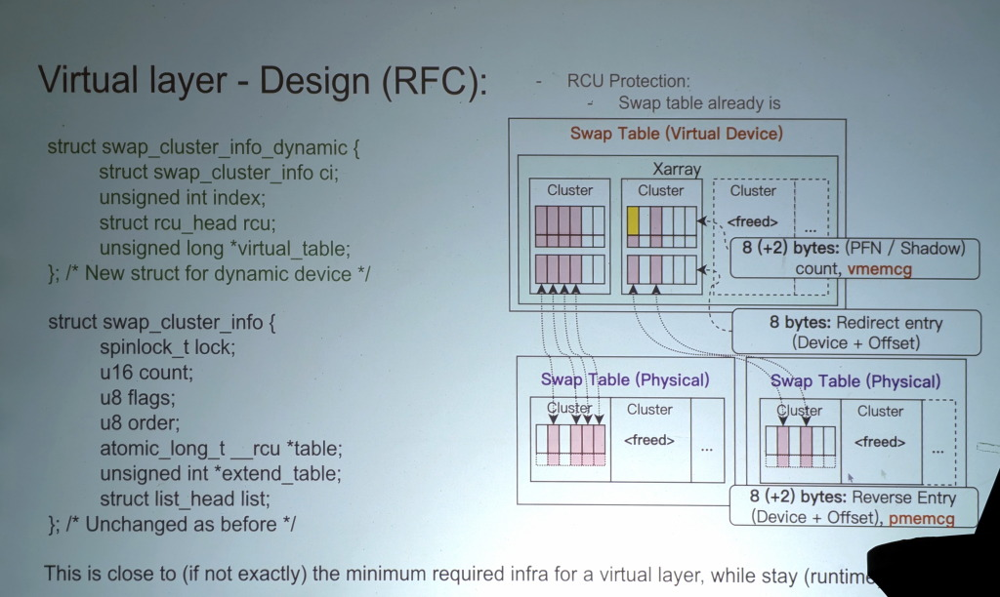

Swap tables, flash-friendly swap, swap_ops, and more
Status and roadmap
The first session was a breakneck-paced presentation from Kairui Song on recent changes in the swap subsystem and what is coming next. Song began by describing his work introducing the swap table and removing a lot of swap-subsystem complexity; see this article and its successor for details on this work. Before his changes were merged for 7.0, the swap subsystem incurred an overhead of between three and 11 bytes per page; that overhead is now reduced to between two and ten bytes. That news was greeted by applause in the room.
Song is not done, though; he intends to cut the static overhead to zero bytes, albeit still with a maximum of ten. His goal to cap that overhead at eight bytes will not be realized in the short term because refault tracking for the memory resource controller requires more data. In the long term, he still hopes to cut the maximum overhead to three bytes per page.
The need for some operations to bypass the swap cache has been removed, and most of the swap-oriented helpers are now folio based. Most operations only need the folio lock now; there are opportunities, he said, to optimize further by applying some lockless algorithms. Work to unify folio allocation with the swap cache is still in progress. Currently, anonymous and shared-memory folios come with their own allocation logic that may bypass readahead; he described this code as a long, complex, and racy fallback loop. He is working to replace it with a single allocation helper.
Other work is aimed at letting the system make better use of the swap cache; better readahead support is an important step in that direction. The zram subsystem can take advantage of it now but, he said, whether that is beneficial is not entirely clear. It may be that zram is fast enough already.
Swapping I/O is asynchronous and takes time; that means that there can be a long delay between the onset of memory pressure and the completion of the I/O that allows that pressure to be relieved. By the time that happens, it may turn out that the system has overshot and swapped out more pages than really needed. This could be helped by immediately dropping pages from the swap cache once writeout has completed. He is not sure why that is not always done now; more research is needed there.
There are a number of other problems yet to be solved. Swapping of PMD-level huge pages is not as efficient as it could be. Readahead can end up bringing in pages used for hibernation, which is wasteful but not a huge problem, though the workaround is ugly. He is contemplating adding a special bit to mark pages reserved for hibernation. There are users who would like to be able to resize swap areas on the fly; that should be practical to implement now.
Another problem arises when both anonymous and shared-memory (shmfs) folios are swapped to the same device. If shmfs-backed transparent huge pages (THPs) are being swapped, they can end up overlapping an anonymous page's slot; when that happens now, the offending folio is simply dropped. The problem will worsen, though, if readahead gains support for THPs. He is contemplating creating a new swap-table type to address this problem. Matthew Wilcox said the problem may come down to a confusion of logical (within the owning process's address space) and physical readahead; we are doing something wrong somewhere, he suggested.
Song is looking into compaction of the swap table. The system manages swap space in clusters, which are organized into a least-recently-used list. It might be possible to drop full clusters from the list; that would increase performance, but might increase memory pressure.
All of the above was compressed into a half-hour slot, but Song was not done yet. The time is coming, he said, where swap files should be renamed to "swap mappings". Swapping now looks a lot like the mapping used for file-backed memory, though with different writeback policies and locking schemes. Much of this could be abstracted out by adding a new virtual swap layer, which could address a number of other problems (such as defragmentation and migration) as well. He put up a slide showing the overall design of this layer:

An RFC patch set has been posted with an initial implementation of this idea. It reuses the existing swap infrastructure, but adds an extra layer of mapping. Among other things, this design allows for faster removal of a swap device (since there is no longer a need to adjust the page-table entries for all of the processes that have pages on the to-be-removed device) and easy defragmentation of swap devices.
Johannes Weiner pointed out that this design could make it easier to swap out huge pages without requiring large chunks of contiguous space on the swap device. David Hildenbrand asked how large the virtual table would be, and whether it might suffer from fragmentation; Song answered that the table can be made large enough to avoid that problem.
Flash-friendly swapping
Swapping can generate a lot of I/O that, if not managed properly, can significantly shorten the lifetime of solid-state storage devices. Youngjun Park is working with embedded devices that make aggressive use of swap, and he would like those devices to not burn out their swap storage prematurely. This session was held jointly between the memory-management and storage tracks.
Flash storage, he said, will wear out over time. Rewriting of data will cause erase cycles, so copying data to the device will cause extra writes and extra wear. The built-in flash translation layer (FTL) has some support for wear leveling, but it is not enough, with the result that swapping is hard on flash devices. It creates a steady stream of random 4KB operations that challenge the wear-leveling algorithms, but flash-friendly write patterns do exist and can be made use of.
The embedded device in question swaps to RAM using a custom mechanism, similar to zram, that compresses pages in memory. These pages are flushed to persistent storage by a kernel thread that is registered as a shrinker; it performs sequential writes that are aligned to erase blocks. There is a deduplication layer that reduces write operations; in particular, there are a lot of matches with pages that were saved in previous hibernation rounds and do not need to be rewritten. The result, he said, is a big increase in the lifetime of the storage device.
Christoph Hellwig asked Park to share his code, "even if it's ugly
";
that would help others to understand what is going on. Park answered that it is a
implemented as a block device and hard to upstream; Hellwig said that the
point was not to merge the code, but to push the discussion forward. There
are some good ideas there, he said; the code would likely need a major
restructuring, but it helps to have a working starting point.
Weiner asked if Park had looked at using zswap with some sort of writeback added on. The answer was that this option had been considered but (for unspecified reasons) not used. Wilcox said that he found the described approach surprising, that overwriting full erase blocks tends to work better. Chris Li commented that it is hard to discover the parameters that describe the optimal I/O patterns for a given device, and that he would like to encourage vendors to be more free with that information.
The final part of the session was focused on the fact that Park's system depends heavily on hibernation, which is the source of much of the swap traffic. Perhaps, it was suggested, it might be better to decouple swap and hibernation and make it possible to create a separate hibernation target that would still use the swap device, but would avoid the swap code and its I/O patterns.
Abstracting the swap backend
The swap subsystem was designed to interface directly with a block device, and it creates its block-I/O operations internally. There is interest, though, in the ability to put other types of devices at the storage layer of the swap subsystem. This concept, which goes by the name "swap_ops", was proposed for discussion by Baoquan He, but, as Li explained in the session, He had fallen victim to Red Hat's closure of its entire China-based development operation, so Li would be running the discussion instead.
The core idea behind swap_ops, he began, is that it would be a subsystem to enable modular swap backends and allow the customization of some swap behavior. It would be a virtual filesystem (VFS) layer for swap, he said. The idea was first proposed at the 2023 LSFMM+BPF gathering, and further discussed in 2024 and 2025. There are a number of similarities with the VFS; where the VFS has a superblock at the beginning of a filesystem, for example, the swap layer has its swap header. A file in the VFS is much like a folio in the swap subsystem, an inode is similar to a swap entry, and so on. But the swap_ops layer would have a much lower overhead, and would not support an equivalent to directories.
There is, Li said, a patch series implementing this concept; He updated the series on May 12. As an example of its value, Li pointed out that the zram subsystem is currently emulating a block device; it would be possible to remove a lot of code if zram were implemented as a swap_ops backend. Other possible backends could be a flash-friendly layer as Park had described, or even one that works with raw flash, though the room was not receptive to that idea. Eventually support for compressed page I/O could be added as well.
At the end, Li said that it might make sense to allow the backend to handle
the allocation of swap slots. There is also work to be done to figure out
the best way to move pages between backends. Li concluded there, and there
were no questions from the group.
| Index entries for this article | |
|---|---|
| Kernel | Memory management/Swapping |
| Conference | Storage, Filesystem, Memory-Management and BPF Summit/2026 |